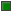

Basic definitions
This package contains basic definitions: Type definitions of Logic and Strength, interface definitions (connectors) for digital electrical components, and partial models for connection patterns which are often used.
Extends from Modelica.Icons.InterfacesPackage (Icon for packages containing interfaces).
| Name | Description |
|---|---|
| Logic | Logic values and their coding according to IEEE 1164 STD_ULOGIC type |
| UX01 | 4-valued subtype of IEEE 1164 STD_ULOGIC type |
| Strength | Output strengths of registers |
|  DigitalSignal | Digital port (both input/output possible) |
| DigitalInput | Input DigitalSignal as connector |
| DigitalOutput | Output DigitalSignal as connector |
| Single input, single output | |
| Multiple input - single output | |
| MIMO | Multiple input - multiple output |
Logic values and their coding according to IEEE 1164 STD_ULOGIC type
Code Table:
| Logic value | Meaning |
| 'U' | Uninitialized |
| 'X' | Forcing Unknown |
| '0' | Forcing 0 |
| '1' | Forcing 1 |
| 'Z' | High Impedance |
| 'W' | Weak Unknown |
| 'L' | Weak 0 |
| 'H' | Weak 1 |
| '-' | Do not care |
4-valued subtype of IEEE 1164 STD_ULOGIC type
Code Table:
| Logic value | Meaning |
| 'U' | Uninitialized |
| 'X' | Forcing Unknown |
| '0' | Forcing 0 |
| '1' | Forcing 1 |
Output strengths of registers
Strength Table:
| Strength | Output conversion to |
| 'S_X01' | Forcing X, 0, 1 |
| 'S_X0H' | Forcing X, 0 and Weak 1 |
| 'S_XL1' | Forcing X, 1 and Weak 0 |
| 'S_X0Z' | Forcing X, 0 and High Impedance |
| 'S_XZ1' | Forcing X, 1 and High Impedance |
| 'S_WLH' | Weak X, 0, 1 |
| 'S_WLZ' | Weak X, 0 and High Impedance |
| 'S_WZH' | Weak X, 1 and High Impedance |
| 'S_W0H' | Weak X, 1 and Forcing 0 |
| 'S_WL1' | Weak X, 0 and Forcing 1 |
Digital port (both input/output possible)
DigitalSignal is the basic digital connector definition. A direction (input, output) is not yet defined. DigitalSignal is of type Logic. It can have the logic values (U, X, 0, 1, ...) which are internally coded by integer values by using the enumeration (c.f. the definition of type Logic).
Extends from Logic (Logic values and their coding according to IEEE 1164 STD_ULOGIC type).
Input DigitalSignal as connector
DigitalInput is the digital input connector definition. DigitalInput is of type Logic. It can have the logic values (U, X, 0, 1, ...) which are internally coded by integer values by using the enumeration (c.f. the definition of type Logic).
Extends from DigitalSignal (Digital port (both input/output possible)).
Output DigitalSignal as connector
DigitalOutput is the digital output connector definition. DigitalOutput is of type Logic. It can have the logic values (U, X, 0, 1, ...) which are internally coded by integer values by using the enumeration (c.f. the definition of type Logic). The arrow shape symbolizes the signal flow direction.
Extends from DigitalSignal (Digital port (both input/output possible)).
Single input, single output
SISO is a partial model for the connection pattern with single (scalar) digital input and single (scalar) digital output. Besides the connectors it provides a rectangle for the icon which can be filled in by the component which inherits the SISO model.
| Name | Description |
|---|---|
| x | Connector of Digital input signal |
| y | Connector of Digital output signal |
 Modelica.Electrical.Digital.Interfaces.MISO
Modelica.Electrical.Digital.Interfaces.MISOMultiple input - single output
MISO is a partial model for the connection pattern with multiple (vector) digital input and single (scalar) digital output. Besides the connectors it provides a rectangle for the icon which can be filled in by the component which inherits the MISO model.
| Name | Description |
|---|---|
| n | Number of inputs |
| Name | Description |
|---|---|
| x[n] | Connector of Digital input signal vector |
| y | Connector of Digital output signal |
Multiple input - multiple output
MIMO is a partial model for the connection pattern with multiple (vector) digital input and multiple (vector) digital output. Besides the connectors it provides a rectangle for the icon which can be filled in by the component which inherits the MISO model.
| Name | Description |
|---|---|
| n | Number of inputs = Number of outputs |
| Name | Description |
|---|---|
| x[n] | Connector of Digital input signal vector |
| y[n] | Connector of Digital output signal vector |